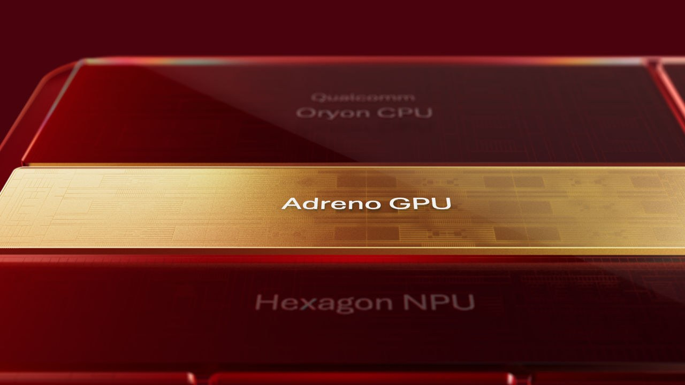

Qualcomm Adreno Neural Fusion：AI Super Resolution＋Frame Generation 直接進 Unity／Unreal 行動渲染路徑
Qualcomm 公開 Adreno Neural Fusion，透過 GPU 內 Matrix Cores、18MB HPM、AI super resolution 與 frame generation，並宣稱支援 Unity/Unreal 整合。

完整分析
引擎工作流
Adreno Neural Fusion 把 neural processing、AI super resolution 與 frame generation 合到 GPU graphics pipeline，並以每個 GPU slice 內的 Matrix Cores 與 18MB High Performance Memory 讓 AI workload 更靠近圖形資料。對 Unity/Unreal 團隊而言，重點是供應商宣稱已有引擎整合，而非要求每個遊戲自行搭一套 NPU pipeline。
製作價值
若實際裝置能用較低 internal resolution 維持可接受畫質，再以 AI upscale/frame generation 補輸出，行動專案就可能把 GPU 預算讓給更複雜材質、陰影或角色數量。這會直接影響 art budget 設計，但生成幀造成的 latency、UI/alpha artifact 與特定內容 ghosting 仍可能限制使用場景。
平台實測
應在支援晶片的實機建立固定 benchmark scene，比較原生解析度、只 upscale、upscale＋frame generation 的 GPU time、功耗、熱降頻、input latency 與 artifact；特別測細線 toon outline、粒子、透明髮絲、快速鏡頭與 UI。官方宣稱不能替代實機 capture，必須把 QA 納入不同畫質檔。